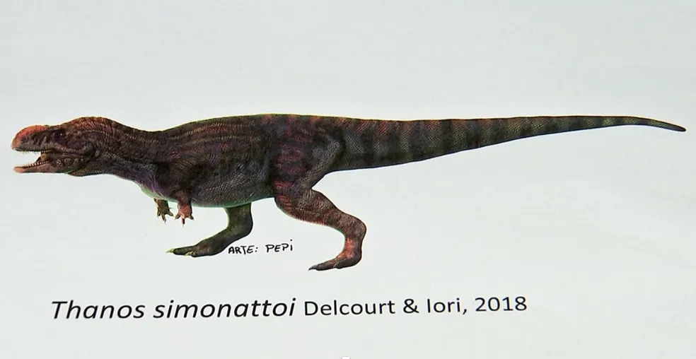
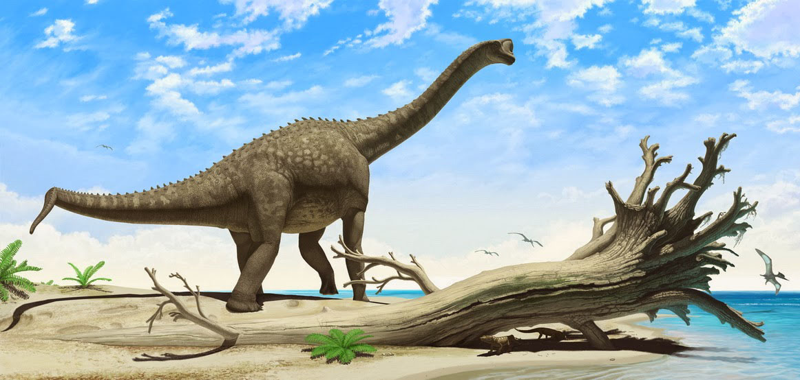

Popularmente chamado de Thanos, este carnivoro poderia chegar a 3 metros de altura e mais de 5 metros de comprimento, sendo um carnivoro do grupo dos Brachyrosta, oque faz ele um parente proximo do famoso Carnotauros, ele viveu aonde hoje é o estado de São Paulo.
Popularmente conhecido apenas como Oxalaia, este carnivoro era do grupo dos Spinosauridae, sendo um dos parentes mais proximos do Spinossauros, ele viveu aonde hoje é o estado do Maranhão, a mais ou menos 100 milhões de anos atrás, tinha por volta de 12 metros de commprimento, podendo chegar a 14 metros, fazendo com que ele seja maior até mesmo que o Tiranossauros Rex, e se tornando o segundo dinossauro carniviro mais comprido já encontrado

Aeolosaurus foi um gigante brasileiro que viveu em cerca de 83 a 74 milhões de anos atrás, tinha por volta de 14 metros de comprimento, sendo um dinossauro relativamente pequeno se compado a outros do seu grupo, no caso, os Sauropodes.
